Leaf I of XII · The Cover
Morning Manna
One short passage, every morning, at the hour you wake.
A Bible reading app for working people, and the data platform behind it · by Francis Obidike
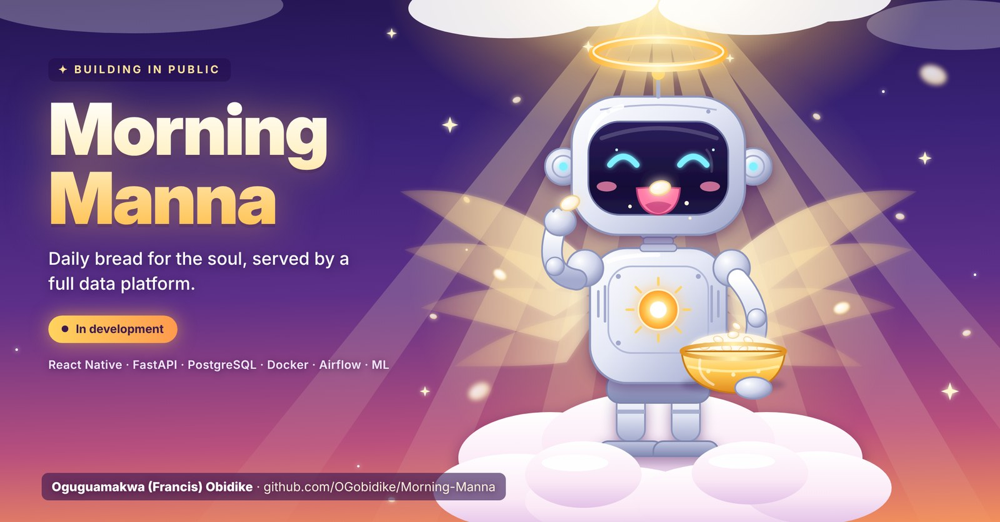
Leaf II
The Need
One short passage, every morning. That is the promise Morning Manna makes to working people who want to start the day with Scripture.
The promise is small on purpose:
- Set your wake time, and the reminder comes then, in your own time zone.
- Read one short passage, from a plan such as 30 Mornings: thirty short passages from the Psalms, the Gospels and the prophets.
- Mark it read, and your streak grows.
- Miss a morning, and it's picked up the next day, never skipped.
Behind that promise sits a full data platform, so the app can learn when people read, who comes back, and what helps them keep going. The leaves that follow walk through it, one piece at a time.
Leaf III
The Scripture
Before the app can keep its promise, the whole Bible has to be in the database, and it has to be right.
One command, python -m app.etl, runs four stations:
- Extract both translations, fetched once.
- Transform book names and text with pandas.
- Validate, and stop loudly if a rule breaks: all 66 books present, the right number of chapters in each, no empty or duplicate verses.
- Load everything in one transaction, so a failed run leaves nothing half-loaded and a repeat run changes nothing.
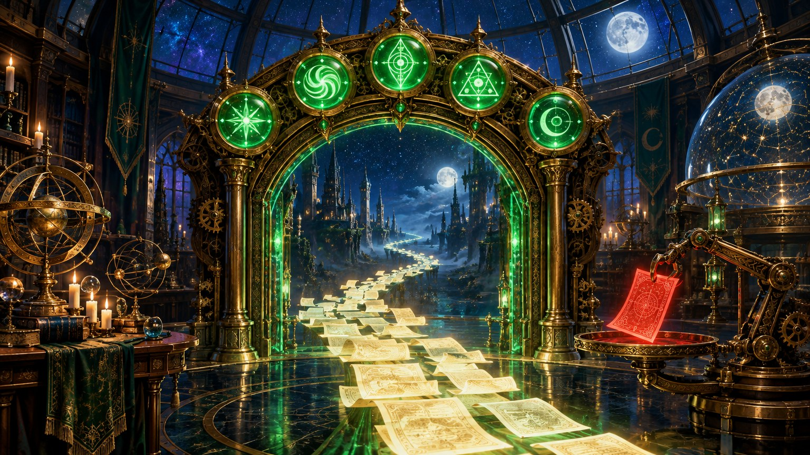
Leaf IV
The App
An Android app, built with React Native, Expo and TypeScript, made for the first minutes of the day.
- Today: this morning's passage with verse numbers, and Mark as read. Then "Done for today", with tomorrow's reference.
- Streak: the current streak on Today, and a 13-week heat map of every morning read.
- Morning reminder: a notification every day at your wake time.
- Settings: wake time, translation, light or dark, and text size.
- Offline: the next 7 passages are saved on the phone, and a reading marked offline is sent when the connection comes back.
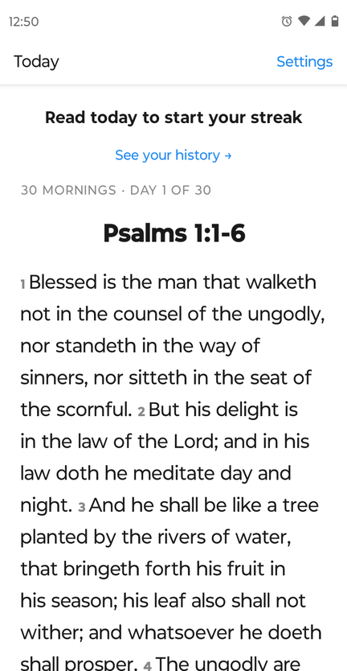
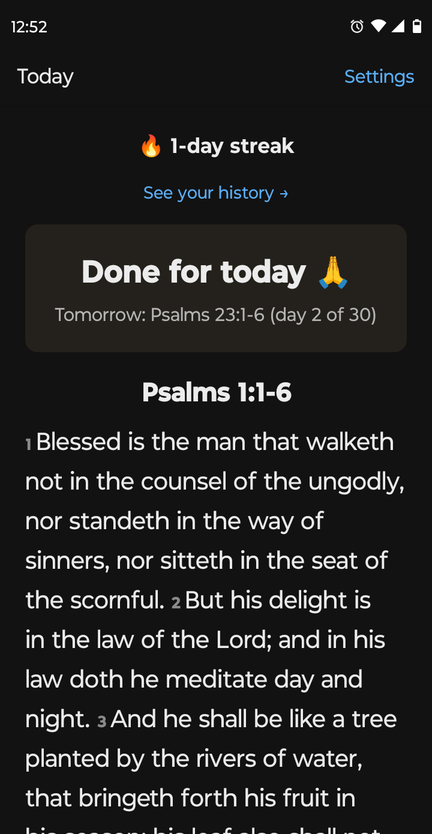
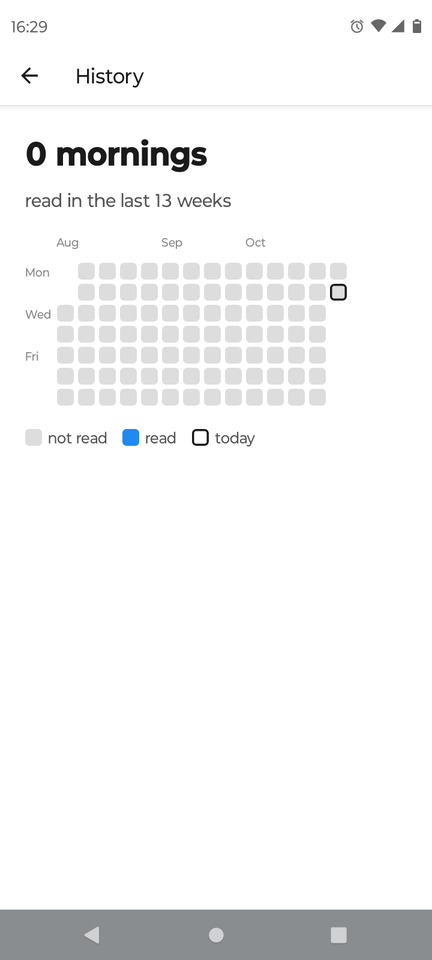
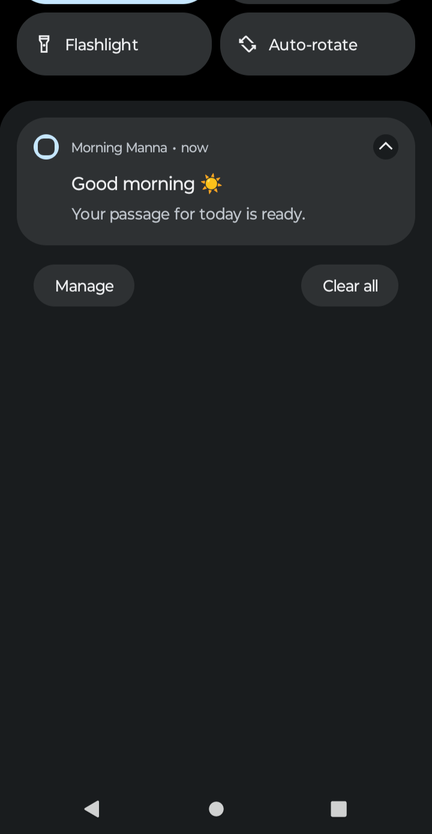
Leaf V
The Platform
Every tap in the app becomes an event, and every night those events become answers.
- The app sends a batch of events to the API, built with FastAPI on PostgreSQL.
- The API stores them, then copies the batch to a data lake (SeaweedFS, which speaks Amazon S3's language). If the lake is down, the reader never notices.
- Every night at 00:30 UTC, Airflow loads yesterday's events into the warehouse.
- Then dbt rebuilds the tables that answer who reads and who comes back.
- Then the champion model scores tonight's streaks and flags who gets a nudge.
- Every Sunday the models retrain, and a new one takes over only if it beats the champion on the same held-out nights.
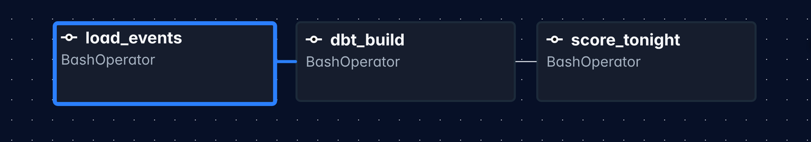
One command, docker compose up -d --build, starts all of it: the warehouse, the lake, Airflow, an MLflow model registry and the model service.
Leaf VI
Who Comes Back
For a daily reading app, two questions matter most: who comes back, and who keeps reading.
Pretend readers. The answers on leaves VI to IX come from 5,000 simulated readers over 90 days. These are practice data, not real people. The app, the warehouse and the analysis are real; only the readers are made up, and the simulator keeps an answer key to grade against.
Every reader counts, including those who never came back, so retention is never flattered. And someone who joined yesterday doesn't count against day 7 until they've had one.
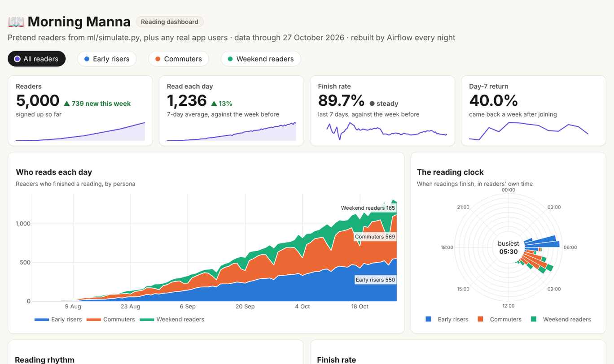
Leaf VII
The First Test
Two wordings of the morning reminder. Which one brings more readers back?
The plan was written down before any data existed: the measure (day-7 return), the size (1,508 new readers per group), and how the result would be read. A coin decides each reader's wording.
One practice run can be lucky, so the whole experiment was re-run 1,200 times on fresh pretend readers, through the very same analysis code, to check the analysis itself.
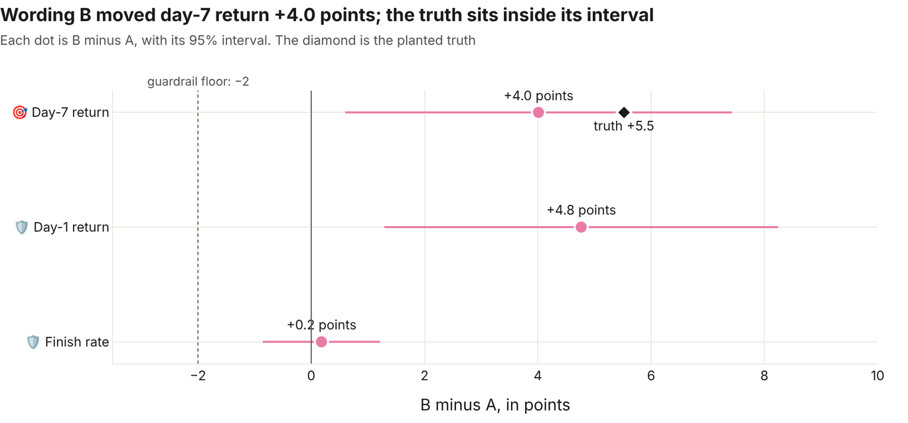
Leaf VIII
Streak at Risk
Tonight, how likely is a reader on a streak to miss tomorrow morning?
Four models answer it, graded on three weeks they never saw:
| Model | ROC-AUC |
|---|---|
| A simple streak-length rule | 0.609 |
| Logistic regression | 0.646 |
| XGBoost | 0.662 |
| LightGBM, the champion | 0.665 |
| Perfect knowledge (the simulator's answer key) | 0.719 |
LightGBM wins by a whisker and gets half of the way from the simple rule to perfect knowledge. Nudging its riskiest fifth of readers reaches someone who'd have missed half the time.
- Every race is tracked in MLflow, and a new model becomes the champion only if it beats the old one on the same nights.
- A small web API serves the champion, and answers for 1,000 readers in about 20 milliseconds.
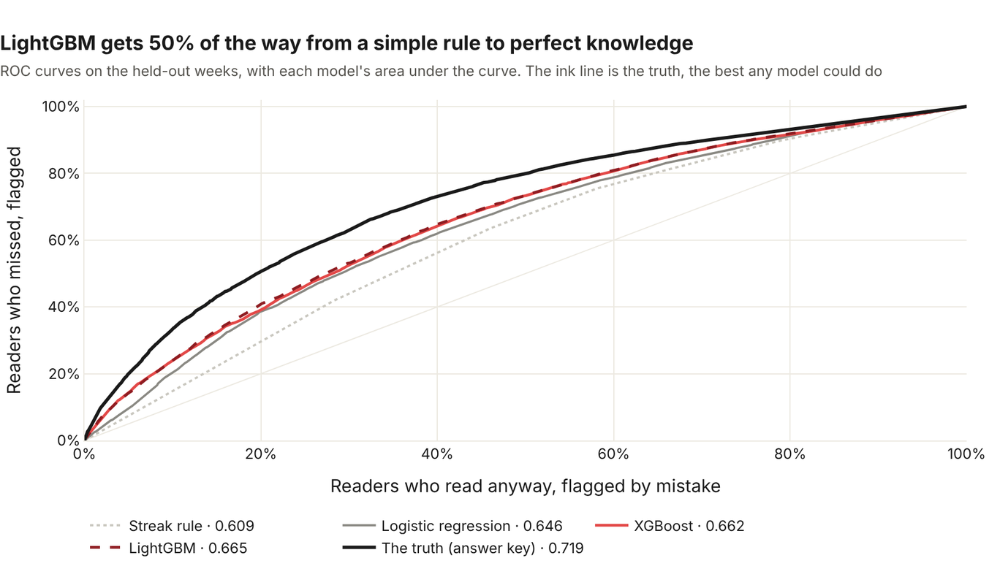
Leaf IX
The Readers
Can a model find the kinds of reader from their habits alone?
K-means, given four habits and never told the answer, found 3 groups: early risers, commuters and weekend readers. They match the simulator's true personas with an adjusted Rand index of 0.91 on readers it never saw. It even found that commuters read earlier at weekends.
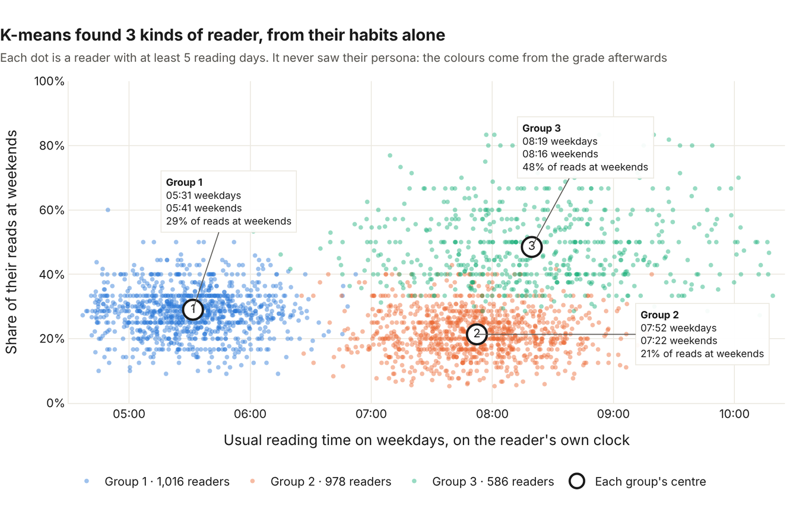
Then the personas earned their keep. The reminder goes off at the reader's wake time, but a commuter starts reading over an hour later, on the train. A model learns when each reader is about to read and picks the time most likely to land in the half hour before. It closes 92% of the gap between today's reminder and the best possible, and for commuters on weekdays, on time goes from 1% to 51%.
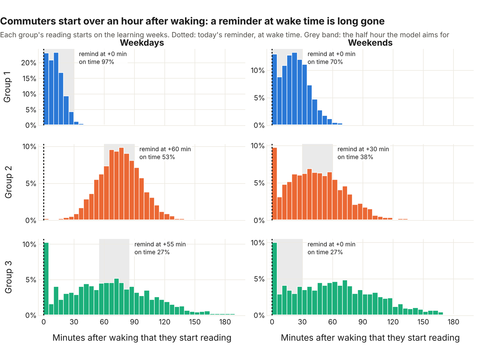
The personas were built to be different, so real readers will blur more. The method, the honest split and the grade stay the same.
Leaf X
Search by Meaning
Ask in your own words, and get the verses that answer, even when they share no words.
"Verses about worry" finds "Fear thou not; for I am with thee".
All 62,188 verses are vectors of their meaning, made by a sentence-transformer model and stored in Postgres with pgvector. The model never saw the Bible's sections, yet a verse's nearest neighbours share its section 62% of the time, against 17% by chance.
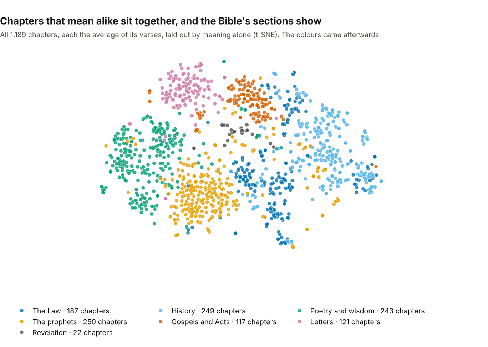
Graded on 30 questions whose answers were frozen before any search ran, searching by meaning finds three to four times what keyword search finds, and a search takes about 11 milliseconds. Mixing in keywords made it no better.
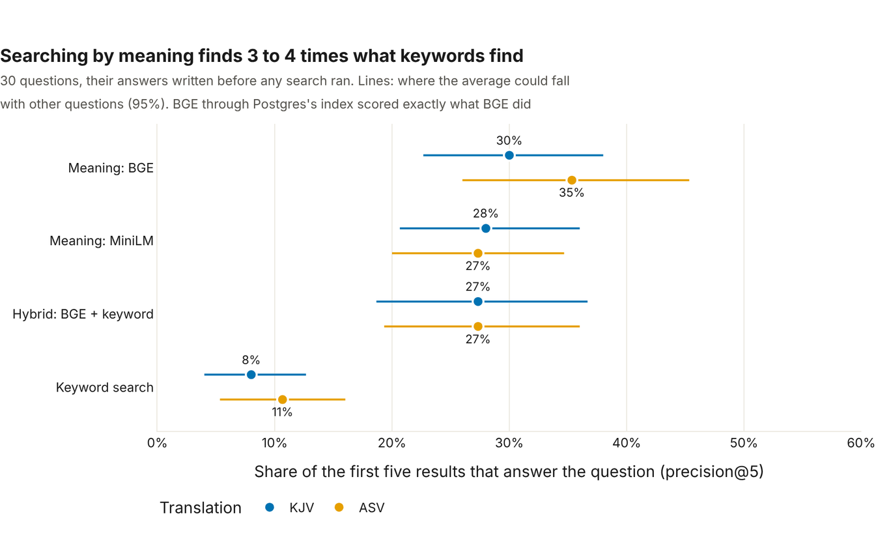
Leaf XI
What to Read Next
After a passage, the app can offer ten verses to read next, each from a different chapter.
After John 3:16 comes 1 John 4:9: "God sent his only begotten Son into the world, that we might live through him".
The answer key is OpenBible.info's cross-references, voted on by readers, with the rules fixed before any recommender ran. Five recommenders raced. Shared words, meaning and topic tags together win, graded on whole books they never saw: a shelf holds 25% of a verse's voted links, and over half of shelves hold at least one.
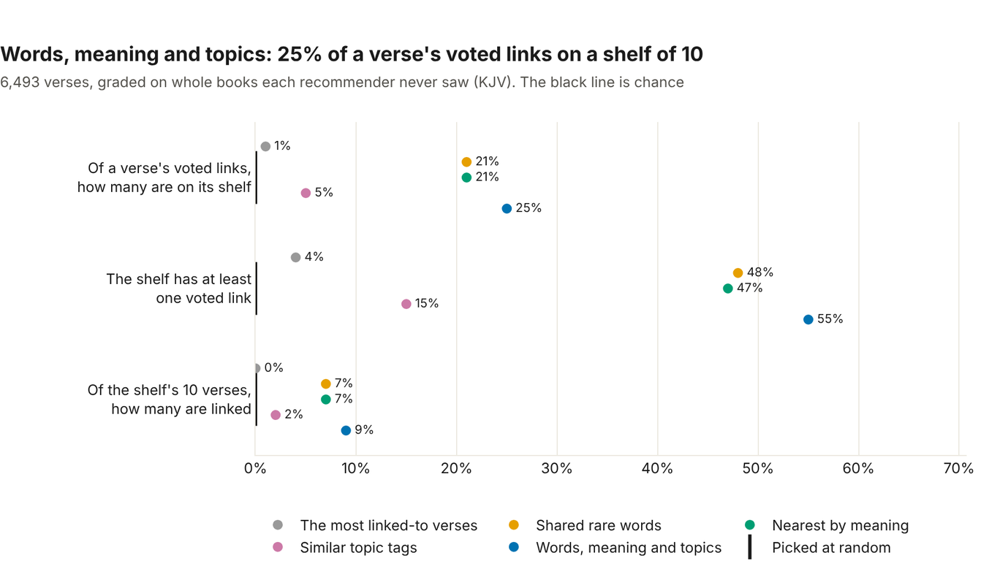
The topic tags behind it come from 30 topics a reader would recognise, graded against Nave's Topical Bible (1896). Hope gets 85% of its first screen right. "Readers like you" is built too, and switched off until real readers choose passages for themselves.
Leaf XII
The Road Ahead
The app, the platform and the models are built. What's left is taking them to the people they're for.
- To the cloud on AWS, with a budget alarm set first: the database on RDS, the lake on S3, the services on App Runner or ECS, secrets in Secrets Manager, images shipped by CI/CD to ECR, and monitoring.
- The push nudge, so tonight's riskiest streaks get a gentle word.
- "Readers like you", switched on once real readers are choosing passages.
- A second A/B test, of the smarter reminder time.
- Maybe an open model, such as Gemma or Mistral, inside the app.
Every piece is built so that a working person, in the first minutes of the day, finds one short passage waiting, and a reason to come back tomorrow.